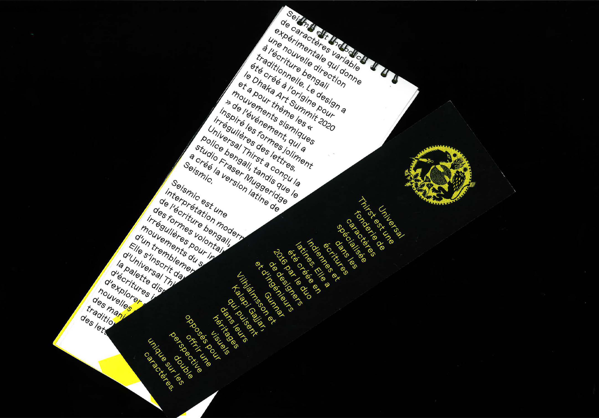
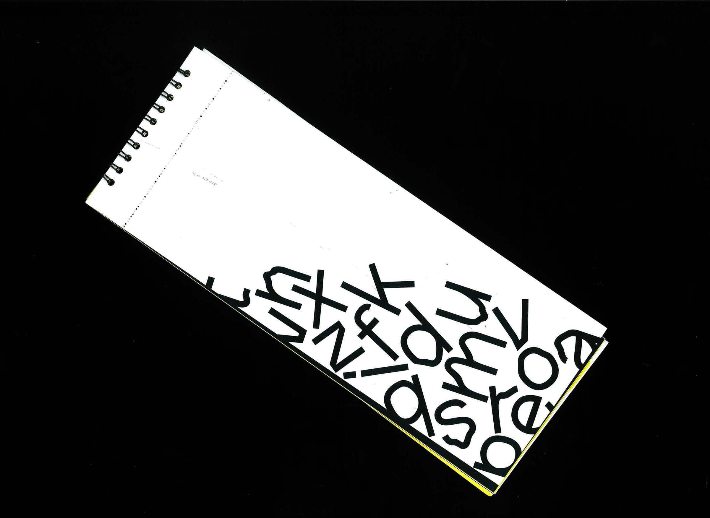
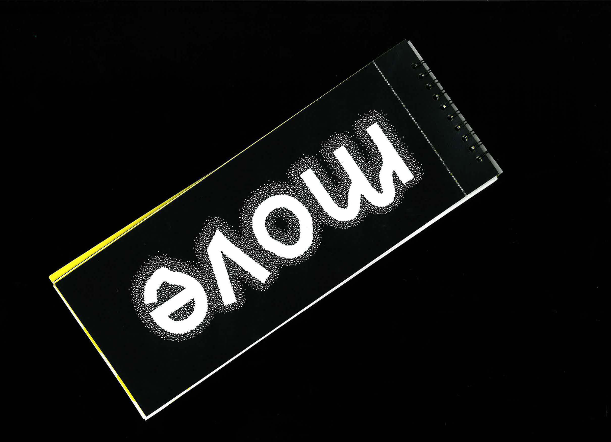
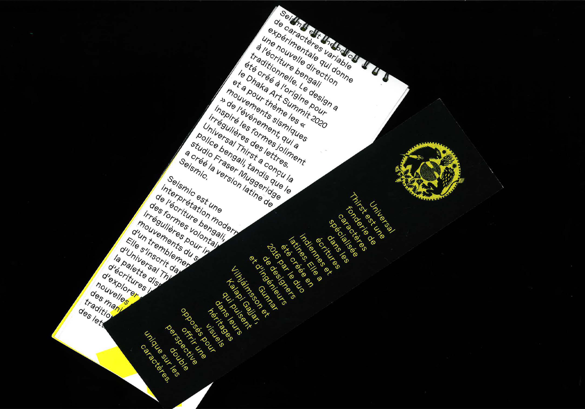
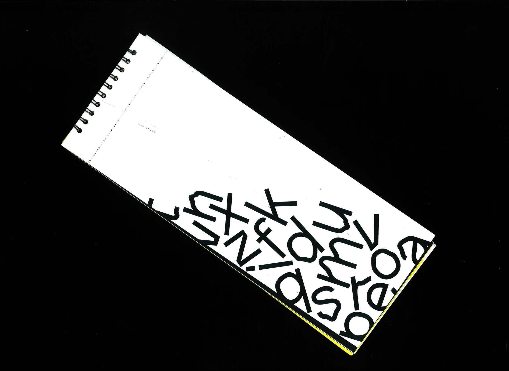
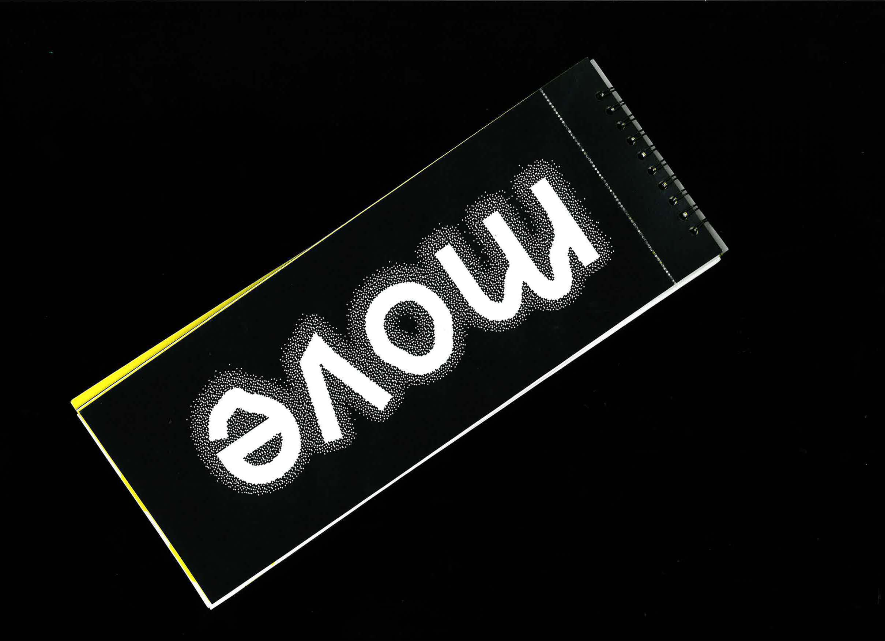

SPÉCIMEN
Réalisation d’un spécimen typographique autour de la typographie « Seismic Latin Variable ». Travail autour du mouvement dans un espace imposé, en lien direct avec la typographie elle même, qui de par ses différentes graisses, varie comme des courbes sismiques de plus en plus fortes.
Entièrement imprimée à l’Esad Amiens, Novembre 2023.